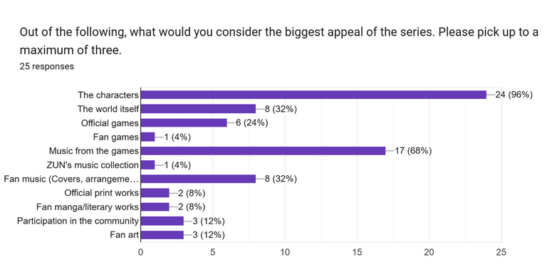
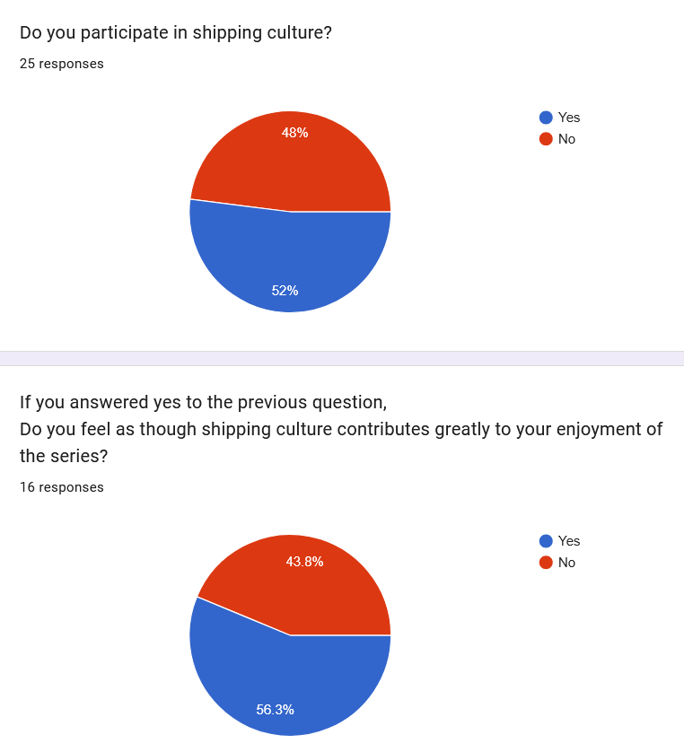

Survey Findings
Storytelling
An overwhelming amount of people responded by saying that the characters were one of the biggest appeals of the series, with all but one making this claim. However, when asked if the characters were well-written, answers were slightly mixed. There was a common sentiment that characters often had engaging stories. They tie into the themes that they're supposed to represent and are great at pushing forward worldbuilding. However, others expressed concern about the many characters that have been forgotten over the years. Some characters aren't expanded upon too much before the story keeps going, though these same people also said this works well enough with fans filling the role of giving said characters more personality. Interestingly, when asked about the world of Gensokyo as a whole, results were very positive. Everyone said the world was engaging, with the concept being unique and the history of the world being engaging.
"yes, most of the characters based on yokai i consider to be well written specifically because most of their stories are directly funneled from folklore.
there are also characters like yuyuko who's character motivations makes her a great example of a well written character"
- Daniel S.

Queer Culture
Something that stood out to me was that a few people brought up queer representation before that section of the survey. When asked about if there were any characters that strongly resonate with them, one surveyee had this to say,
"Toyosatomimi no Miko is basically the closest we will ever get to a trans woman, and she has one of the greatest [musical] themes"
- Willow
While a majority of the responses pointed to people being unsure of the series doing a good job at positive queer representation, there were still more positive responses compared to negative ones. What really paints the picture on this subject is the different amount of voices commenting on the matter.
"It's a bit complicated actually, if we go by a strict notion of what's canon and what isn't, the only confirmed queer character is Hisami Yomotsu with how explicit her yearning for Zanmu is,
but if we decide to look at a more implied perspective, we also got how Toyosatomimi no Miko can be read as being a trans woman or certain characters relationships, like the one between Maribel Hearn and Renko Usami.
Overall even though i feel like there could be a little more effort put into it, the way it's handled is pretty positive."
- Anonymous Surveyee
"While the series itself may not explicitly have much representation, the freedom fans can have with the characters makes it very easy for a lot of characters to meet the requirements.
Being a series of pretty much all girls and a lot of relations between characters being given a lot of depth in written work especially, queer representation can almost feel 'inherent'."
- NukeEyeNate
"As far as I can tell, ZUN very barely manages to add in sexuality to his characters and writing, save for I believe Okina who has a son (her or some other character has a canonical son who dies).
Furthermore, while not completely impossible, it would be very hard for ZUN to provide queer representation since he seems to have more conservative perspectives towards the representation of women.
Hence why there is a general heterogeneity in the gender of the cast, wherein non female characters can be counted upon one's own two hands. But that is to say, rather than day Touhou does a bad job at queer representation, it doesn't represent sexuality at all really.
They are simply humans existing in a world wherein things exist and happen."
- Ash
- NukeEyeNate
- Ash
This last quote is one I found especially powerful. When it comes to queer spaces in general, asexual and aromantic people are often overlooked. Great stories don't always need romance for relationships between characters to work. I myself frequently see characters that are very close and enjoy interpeting them as romantic partners, so seeing this perspective laid out like this was a much needed change of perspective.
Shipping Culture

Shipping culture has always been a big part of fandom culture. Many fans will often want to see characters in romantic relationships with each other, and that's more or less seen in this data even with the small sample size. Although there were only 25 responses, the majority participates in shipping culture, even if the difference is only by 1. Of those responses*, a majority of surveyees said that shipping culture contributes greatly to their enjoyment of the series. When asked to elaborate on their feelings, some more interesting points get brought up.
"It's a feeling i have about every fandom i'm in, not limited to Touhou. I really shipping culture and to see How other people interpret the characters and their relationships,
be in a romantic, platonic or familial sense."
- Anonymous Surveyee
"I personally do not engage in shipping in general because the necessary conditions for me to believe in a ship are a bit much, and exists beyond simply 'they were nice to each other.'
May people simply not just be friends without necessitating a relationship? Regardless, in a general sense, the perspectives of the random exist independent to the author."
- Ash
"I would say it contributes to an extent in the sense that I like to elaborate on my favourite characters through headcanons,
fanworks etc but if there was no shipping culture I don't think it would greatly impact my enjoyment of the series (although it would have an effect.)
- Muubon
"I love seeing the girls kiss and have a loving and happy relationship"
- Anonymous Surveyee
There's a few different sentiments floating around, which I find quite significant. Many people are simply into seeing how relationships play out, with shipping culture leading to different character dynamics being explored, some romantic, others familial. Once again, one surveyee caught my attention with their opinion on romance. Many fans love seeing relationships develop into romance, but others are perfectly fine with the lack of romance, and prefer it that way. Though when it comes to romance, it kind of goes without saying, but due to the lack of men in the series, most pairings are queer. This is a big part of the appeal for many people, as stated eloquently by an anonymous surveyee. This diversity in opinions just goes to show how diverse the community can be. There's always something for everybody, and you can choose the way you interact with the series and community due to how extensive it is.
*Note: See limitations section below. I am aware of this mathematical error.
Limitations
Sample size & Limited perspectives
Like most people my age, I find myself in only spaces discussing media that I quite enjoy. I shared the link to this survey in a Discord server, and encouraged people to share it with anyone else who might be interested. The survey concluded with 25 total responses, with a few common trends among the people who responded to it. There's still a decent amount of diversity, though it is worth noting, especially since the majority of respones were from males.

There is a mathematical error in the data as well. There were 13 responses where surveyees said that they participate in shipping culture, yet the follow-up question had more responses. The follow-up question should have had an equal amount of responses to the amount of people who answered yes to the main question, but that isn't the case. This can be a problem on either end, where I left enough room for error in the wording or formatting of the question, or surveyees made an error when filling out the survey. The root of the error isn't necesarrily important, but the fact that it did happen must be acknowledged, especially since it made me a bit confused when analyzing the survey results.